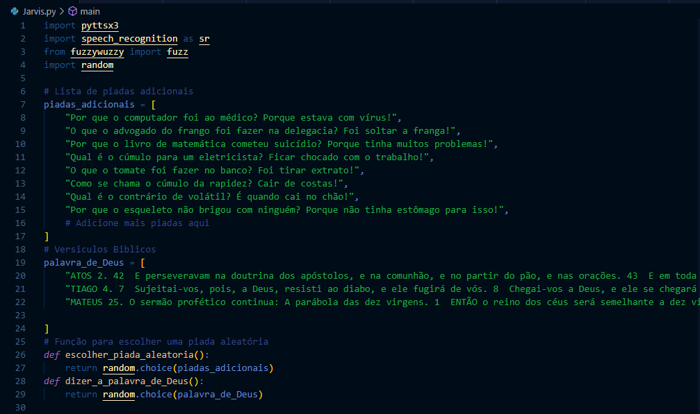
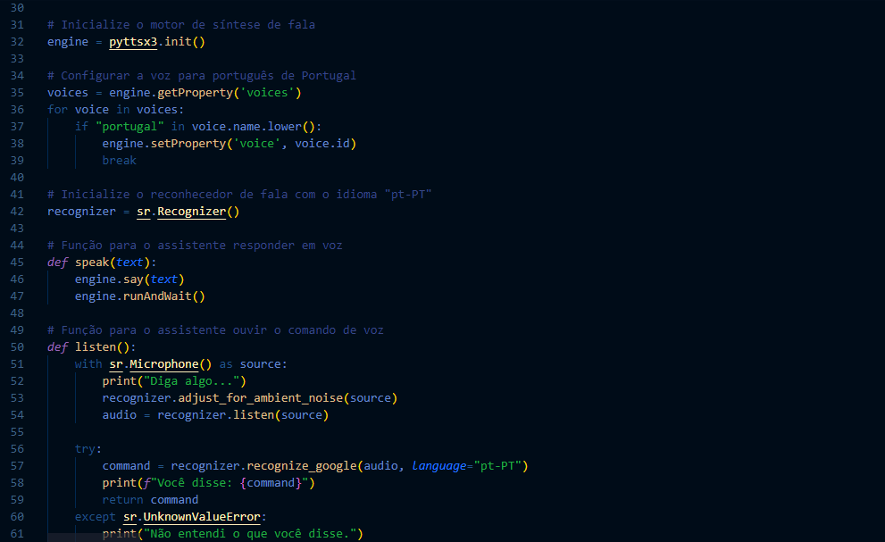
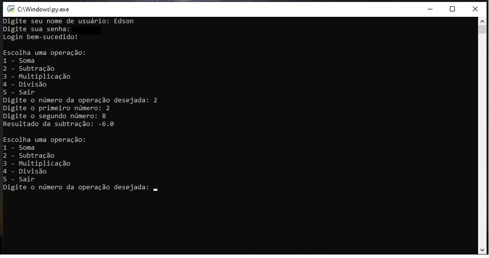

CADERNO DE PROJECTOS
Ideias em
construção.
Esta página reúne notas e materiais de projectos de aprendizagem. Os documentos originais são apresentados quando estão disponíveis.

PROJECTO PESSOAL
Assistente virtual
Jarvis.
Um exercício para explorar a interacção entre utilizador e computador.
O Jarvis foi concebido como um assistente virtual de aprendizagem, inspirado em assistentes digitais de ficção científica. A ideia é desenvolver funções que permitam receber comandos por voz e responder através de mensagens programadas.
Os materiais incluem scripts de Python e exemplos de funções de resposta. O projecto depende das bibliotecas necessárias para reconhecimento e síntese de voz, conforme a implementação utilizada.


PROJECTO PESSOAL
Calculadora
com login.
Projecto de aprendizagem que combina operações matemáticas com um mecanismo de acesso e uma interface gráfica. Serve para praticar a organização do código e a ligação entre lógica de programação e experiência de utilização.
O documento disponibilizado apresenta o material de programação associado à calculadora.

Aprender é
iterar.
Os projectos desta página documentam etapas de aprendizagem. A apresentação não deve ser entendida como garantia de produto final ou de funcionalidades que ainda não tenham sido testadas.
Contactar Edson ↗